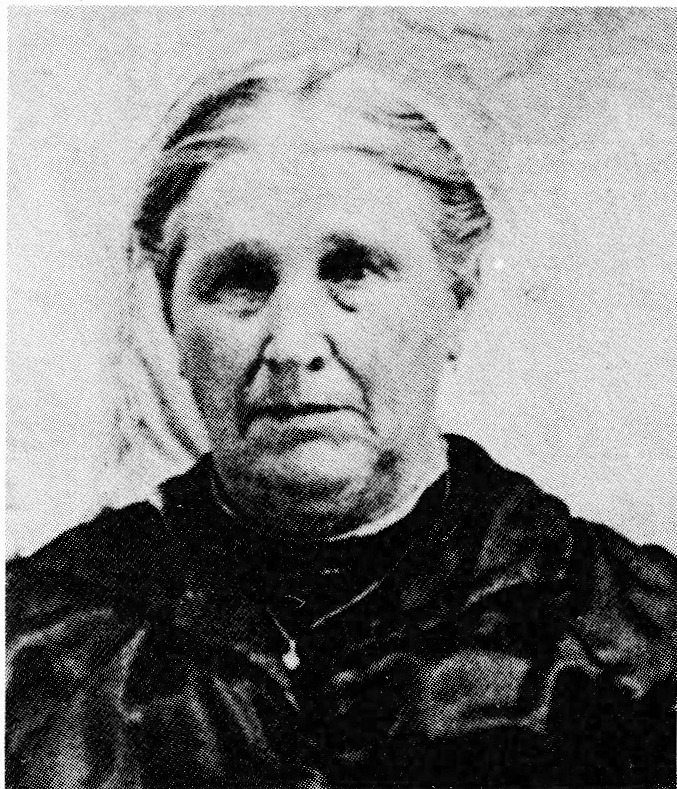

never married and years later, following his death, a letter was sent from a lawyer to Henri who was then living in Veillardville, notifying him that the lawyer wished to settle Edouard's estate. Sometime later Henri and his brothers each received their share."

We know Arthemize married three times in all. The first to Henri Allain, the second time to Nazaire Fugere on September 26, 1892, and on August 13, 1904 she married a third time - to Alfred Denis who was a twin. According to Cecile Gingras, a great niece of Arthemize, Alfred is remembered for singing in the church choir for some 50 years.
Following Alfred's death, Arthemize moved into St. Ubald where she lived close to the church. Cecile remembers her as being a jolly, good-living woman who loved having company. Many a time her family would stop at Arthemize's place for a short visit on their way to church. She always had biscuits and good candy which she passed to them. Cecile was 14 years old when Arthemize died and at that age one remembers certain things quite vividly. She remembers it being said that Arthemize died suddenly January 9, 1921, at night, after having eaten lunch during the evening with her friends. She was nearly 65 years old.
Cecile shares this old family recipe with us. It was written in French and the translation goes like this:
Salted Lard Cake
1 lb. lard - salted and mashed
1 pint water
Boil together 5 minutes.
Method
4 eggs, beaten
2 cups sugar
1 cup molasses
Mix 4 to 5 cups flour and 5 tsp. baking powder, 3 tsp. spices to suit your own taste. Mix all together with 1 lb. raisins and 1 pkg. of red and green cherries. Bake at 325° F. 2 hours or more.
ST. UBALD
submitted by Marlyne (Alain) Reindl
The information on St. Ubald, Quebec, was obtained from two books written on the occasion of the 100th anniversary of St. Ubald in 1971 as well as from the newspaper, The Portneuf-Press, November 25, 1971.
St. Ubald is a small village about twenty miles north of the St. Lawrence River and situated on Highway 363. When approaching this quiet town, one is immediately drawn to the church spire which towers over the tree tops. It was in this area that Simon Allain settled.
When Simon Allain settled in the Lorette area of Quebec, he could not have envisioned his family's contribution to the development of Quebec. One of his descendants, Jacques Alain, was a church trustee while other Alains were known as "cultivateurs". These men and women devoted themselves to building a new life for their families by clearing and making use of the forest; they plowed the land, built houses, and before long, villages and towns had sprung up. They established schools, built churches and, in these and many other ways, they developed a region unique to that part of Quebec. That was progress; however, back then in the 1600s, progress came slowly.
Life was difficult for the colonists of St. Ubald, but no one complained though others may have laughed at them wearing moccasins on their feet and pack sacks on their backs. They lived in cabins made of rough wood which were way out in the forest where there were no roads, just trails and lots of flies. It was true, they were not rich and most would admit, "Nous etaient casses comme des clous" (poor and broke as nails). According to Jules St. Germain, cultivateur-colonist, living in 1800 in St. Ubald, "These people were happy in their misery and were young, full of health, and most encouraging in helping their family and friends. Everyone did their best and were ambitious, stimulated by the